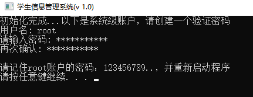
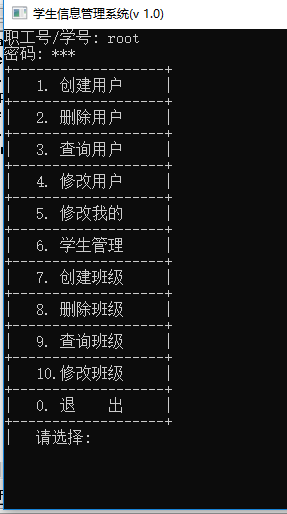
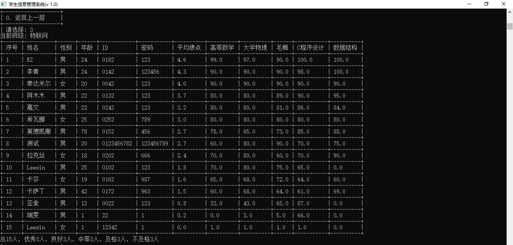
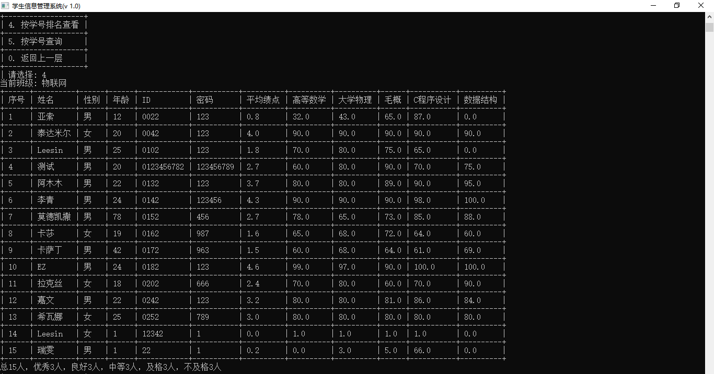
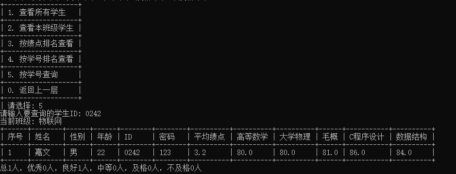

快速了解
介绍
这是一个用C语言编写的“学生信息管理系统”，该系统不仅能管理学生信息，同时还增加了用户管理、班级管理和学生管理。系统拥有一个默认账户：root，在系统初次运行时
设定密码，该用户拥有最高权限，但限制于不能修改除了密码之外的其他信息。而普通用户（主要针对于教师），可以对自己的班级的学生进行“增删查改”操作，但是无权
修改班级信息。当前版本只有这两类用户需要管理，在未来版本中将加入学生也可以作为用户登录。
- 初次运行，您将为其root账号创建密码，并需要重启程序。
- 管理用户，所有其他账户的创建和删除都必须由root用户操作。
- 管理班级，所有班级的创建和删除都必须由root用户操作，包括修改班级要学习的科目。
- ID唯一， 一经创建，无法修改，同时唯一。在创建ID之后，如果是教师（用户），则系统自动在ID后补一个“1”，代表是教师（用户），
如果是学生，则会在ID后补一个“2”，代表是学生。添加教师（用户）或学生时不必考虑这个问题，由系统来区分。
- 文件加密，本系统使用文本文档来保存数据，同时进行加密处理。
- 控制台，使用默认的控制台，在后期的版本中将加入命令行，使用更为方便。
用户管理结构图
效果
-
初次运行

-
登录界面已经操作界面

-
学生管理

成绩排序

学号排序

查找学生

- 更多功能请自行运行程序体验，本系统的功能并不丰富，如有意请自行添加。
使用
数据结构
定义用户基本信息
- 用户一般包含姓名、性别、年龄、id和密码。
- 代码展示
struct people_base_info {
char name[PEOPLE_NAME_LENGTH+1]; /* 名字 */
char id[ID_LENGTH+1]; /* id */
char passwd[PASSWD_LENGTH+1]; /* 密码 */
int age; /* 年龄 */
int gender; /* 性别 */
}
定义教师信息
- 教师除了拥有基本信息之外，应该还有该教师管理的班级
- 代码展示
struct people_base_info {
char name[PEOPLE_NAME_LENGTH+1]; /* 名字 */
char id[ID_LENGTH+1]; /* id */
char passwd[PASSWD_LENGTH+1]; /* 密码 */
int age; /* 年龄 */
int gender; /* 性别 */
};
定义学生信息
- 学生除了拥有基本信息之外，应该还有各科成绩，绩点（GPA）
- 代码展示
struct student_s {
base_p base; /* 基本信息 */
float gpa; /* 绩点 */
score_p score; /* 各科目对应的成绩链表 */
student_p prev;
student_p next;
};
定义班级信息
-
班级应该包含以下信息
- 班级名称
- 班主任
- 学生
- 要学习的科目
- 代码展示
struct class_s {
char name[CLASS_NAME_LENGTH]; /* 班级名称 */
base_p teacher; /* 班主任信息 */
subject_p subject; /* 班级要学习的相关科目 */
student_p student; /* 班级里的学生 */
class_p prev;
class_p next;
};
科目以及成绩
struct subject_s {
char name[SUBJECT_NAME_LENGTH]; /* 科目名称 */
float credit; /* 科目学分 */
subject_p prev;
subject_p next;
};
struct score_s {
float score; /* 分数 */
score_p prev;
score_p next;
};
算法
排序
排序的算法很多，本系统采用最简单的“冒泡”排序算法，这种算法不够好，但本系统的重点是在链表的节点交换上和设计多种数据类型的排序模板上。
排序算法之回调方式, 下面的代码中采用的是回调方式，使用回调函数可以做大大地增加了代码的复用性行。
排序算法之正常方式，正常方式就是不同的类型都得写一个相应的函数，源代码中也提供了这种方式。
链表排序比数组排序难实现，主要体现在两个元素的交换上，也可以把链表变成数组在用数组的方法来排序，也就是指针数组，但这种方式也有弊端，
就是事先不知道链表的长度，很容易造成数组越界。
/*
* 学生排序，回调方式
*/
class_p sort_student_template(class_p _class, _bool (*sort_ways)(void *a, void *b)) {
class_p temp;
student_p student;
student_p s_temp;
student_p s;
if ( _class == NULL || _class->student == NULL ) {
return NULL;
}
temp = copy_class(_class);
if ( temp == NULL ) {
return NULL;
}
/*
* 排名
*/
student = temp->student;
s = student;
while ( student->next != NULL ) {
s_temp = student->next;
while ( s_temp != NULL ) {
if ( sort_ways(s_temp, student) ) {
swap_student_node(s_temp, student);
s = s_temp;
s_temp = student;
student = s;
}
s_temp = s_temp->next;
}
if ( student->next != NULL ) {
s = student;
}
student = student->next;
}
/*
* 回到头结点
*/
while ( s->prev != NULL ) {
s = s->prev;
}
temp->student = s;
return temp;
}
_bool sort_for_gpa(void *a, void *b) {
return ( (student_p) a )->gpa > ( (student_p) b )->gpa ? TRUE : FALSE;
}
_bool sort_for_id(void *a, void *b) {
return strcmp(( (student_p) a)->base->id, ( (student_p) b )->base->id) > 0 ? TRUE : FALSE;
}
/*
* 交换student节点位置
*/
void swap_student_node(student_p a, student_p b) {
student_p a_next;
student_p a_prev;
if ( a->next == b ) { /* 相邻节点，a在前 */
if ( b->next != NULL ) {
b->next->prev = a;
}
if ( a->prev != NULL ) {
a->prev->next = b;
}
a->next = b->next;
b->prev = a->prev;
a->prev = b;
b->next = a;
} else if ( a->prev == b ) { /* 相邻节点，b在前 */
if ( a->next != NULL ) {
a->next->prev = b;
}
if ( b->prev != NULL ) {
b->prev->next = a;
}
b->next = a->next;
a->prev = b->prev;
b->prev = a;
a->next = b;
} else { /* 非相邻节点 */
if ( a->next != NULL ) {
a->next->prev = b;
}
if ( a->prev != NULL ) {
a->prev->next = b;
}
if ( b->next != NULL ) {
b->next->prev = a;
}
if ( b->prev != NULL ) {
b->prev->next = a;
}
a_next = a->next;
a_prev = a->prev;
a->next = b->next;
a->prev = b->prev;
b->next = a_next;
b->prev = a_prev;
}
}
替换链表节点
class_p replace_class_node(class_p head, class_p old_class, class_p new_class) {
if ( old_class == NULL ) { // 空链表
return head;
} else if ( old_class->prev == NULL && old_class->next == NULL ) { // 只有一个节点
head = new_class;
free_class(old_class);
} else if ( old_class->prev == NULL && old_class->next != NULL ) { // 头结点
new_class->next = old_class->next;
old_class->next->prev = new_class;
old_class->next = NULL;
head = new_class;
free_class(old_class);
} else if ( old_class->prev != NULL && old_class->next == NULL ) { // 尾节点
old_class->prev->next = new_class;
new_class->prev = old_class->prev;
old_class->prev = NULL;
free_class(old_class);
} else if ( old_class->prev != NULL && old_class->next != NULL ) { // 中间节点
old_class->prev->next = new_class;
old_class->next->prev = new_class;
new_class->next = old_class->next;
new_class->prev = old_class->prev;
old_class->next = NULL;
old_class->prev = NULL;
free_class(old_class);
}
return head;
}
删除链表节点
删除链表中的某一节点
class_p delete_class_node(class_p head, class_p node) {
if ( node == NULL ) {
return head;
}
if ( node->prev == NULL && node->next == NULL ) {
free_class(node);
head = NULL;
} else if ( node->prev == NULL && node->next != NULL ) {
head = head->next;
head->prev = NULL;
node->next = NULL;
free_class(node);
} else if ( node->prev != NULL && node->next == NULL ) {
node->prev->next = NULL;
free_class(node);
} else if ( node->prev != NULL && node->next != NULL ) {
node->prev->next = node->next;
node->next->prev = node->prev;
node->next = NULL;
free_class(node);
}
return head;
}
反馈
反馈